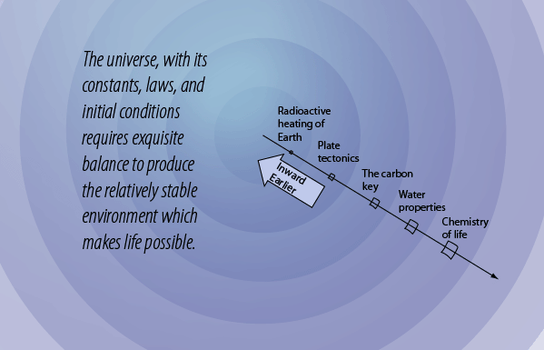
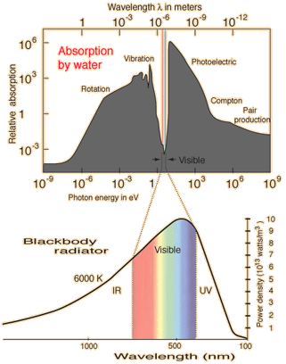

Amazing water, the fluid of life.
Water as the solvent for life can be considered essential for life as we know it. According to Ward and Brownlee, the Earth is 0.1% water by mass compared to an amount up 20% water for some of the carbonaceous meteorites, thought to be typical of the asteroid belt. Earth's Moon has almost no water, one of the clues to it's extraordinary origin. There is a considerable amount of water on Mars, but with an atmospheric pressure of only 5 mmHg, liquid water cannot persist on its surface. Venus is far too hot for the presence of water.
The role of Earth's oceans is considered critical for the long term stability of the climate that is needed for life. Yet Ward & Brownlee judge that even twice as much water would have created a "water world" with no continents and few nutrients for the development of life.
The light spectrum of the Sun coincides remarkably with the narrow band of wavelengths that makes up the transmission window of water vapor in the atmosphere. Water in the atmosphere acts as a greenhouse gas, making the Earth warmer than it would be without the water vapor. But unlike carbon dioxide, water as a greenhouse gas is somewhat self-regulating. If the temperature drifts upward, more water is evaporated from the oceans, forming clouds that reflect off part of the incoming radiation. |  |
Another remarkable fact about water is that is maximum density occurs at 4°C rather than at 0°C or below. This seemingly innocuous detail is in fact critical to life on the Earth. Water decreases in density as it approaches the freezing point. This decrease in density is only about one part in 10,000 as it cools from 4°C to 0°C, but this is sufficient to cause the water near freezing to come to the top. The water further expands upon freezing, so that water freezes from the top down, and ice floats on water. |
| Reflections on the chemistry of life. |
Water Concepts
Reference
Ward and Brownlee
Ch 3
HyperPhysics  | R Nave |